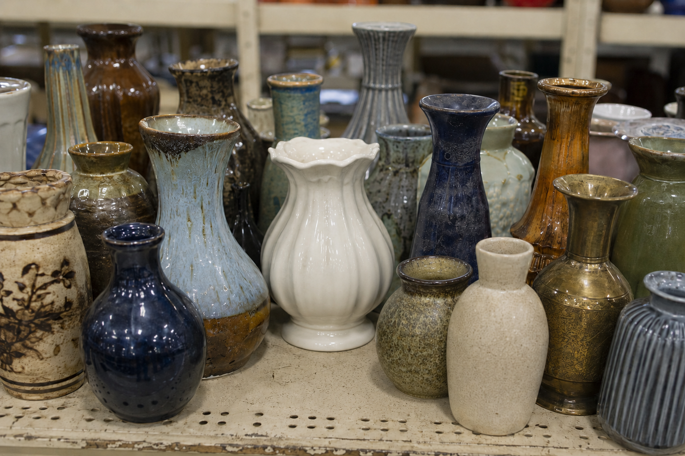

Question
Back to projects
Retail · Consumer insights
Second-Hand Retail Stores
How product displays shape perceived uniqueness, quality, and purchase intent.
10Online experiments
~2,500Participants
1Field study
Approach
Online experiments tested product displays, perceived uniqueness, quality, and purchase intent. Observed consumers in a thrift pop-up setting.
Finding
Specific displays significantly increased perceived uniqueness and purchase intent.
Business use
Evidence-backed support for how retailers display second-hand items.
Interactive comparison
Same Product. Different Retail Context.
Switch the surrounding assortment to optimize product display and increase purchases.
Download the full case studyDisplay test


Mixed assortmentMore discovery. Stronger product evaluations.